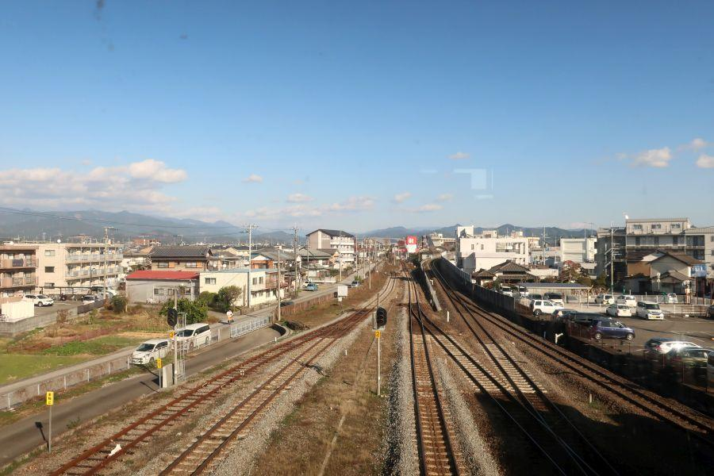

ユニークな駅名の高知県の鉄道交通中心地 < 後免駅 / 高知県南国市 >

世の中には面白い名前の駅が いくつも存在しますが、高知県南国市にあるこちらの駅は 読みが一風面白い名称となっています。
後免(ごめん)駅
後免駅(ごめんえき / 高知県南国市)
JR土讃線
土佐くろしお鉄道阿佐線(ごめんなはり線)
が構内を共用する、共同使用駅。
大正14年(1925)、鉄道省高知線(現JR土讃線)が高知から土佐山田まで延伸される際に開業した。
一風変わった駅名は かつての自治体名・長岡郡後免町(ながおかぐんごめんちょう)に由来。後免町は昭和34年(1959)に周辺自治体と合併して 南国市(なんこくし)となりましたが、駅名は開業当初から改称されることなく 現在に至ります。
周辺路線図
右... 徳島・高知 方面
左... 高知・中村 方面
下... 安芸・奈半利 方面 ※土佐くろしお鉄道線
県の中心駅・高知駅から4駅という位置関係。当駅から分岐して、東部の安芸・奈半利方面へ向かう路線があります。
JR後免駅の発車時刻表
この辺りは 高知県内のJRでは最も本数が多い区間で、近距離を移動するための各駅停車が それなりの本数運転されています。
長距離を移動するための特急列車は、凡そ1時間あたり1本の運行。上り列車の多くは 瀬戸大橋を渡って岡山まで運転されています。
後免駅には0番線が存在します。
緑色の列車が停車しているホームがそれで、土佐くろしお鉄道ごめん・なはり線を線内だけで折り返して運転される列車が発着しています。
1番線はJRの列車と、ごめん・なはり線に直通する列車が発着するホーム。
2番線・3番線は JRの列車が発着します。
土佐くろしお鉄道 ごめん・なはり線
後免駅に発着しているもう一つの列車...
平成14年(2002)と 21世紀になってから開業した 土佐くろしお鉄道阿佐線、通称 ごめん・なはり線です。
結果的に、かつて運行されていた土佐電鉄安芸線の路線とほぼ同じルートに 鉄道路線が復活・延伸する形に落ち着きましたが、開業に至るまでは 一旦建設工事が凍結される等、非常に長い年月がかかりました。
昭和40年(1965)
国鉄阿佐線 着工
昭和49年(1974)
土佐電鉄安芸線 廃止
昭和56年(1981)
阿佐線 工事中止
昭和63年(1988)
阿佐線 工事再開
平成14年(2002)
土佐くろしお鉄道阿佐線、通称 ごめん・なはり線 開業
鉄道開業にあたり、一肌脱いだのが 地元高知県出身であり、アンパンマンの原作者・やなせたかしさん。
20ある全ての駅に その土地の名物等をもじったキャラクターを描きおろされました。
後免駅は "ごめんえきお君"
「ごめん駅でごめん」 の歌碑と アンパンマンの石像が、土佐くろしお鉄道が発着する0番線ホームに立てられています。
後免の地は、作者の やなせたかし さんが、幼少期に過ごした場所です。
ごめん・なはり線の運転本数
土讃線よりはやや減少して、一時間当たり1～3本。
主には 奈半利駅まで全走列車と、途中の安芸駅まで運転される区間列車が 運転されています。
また、地方の中小鉄道としては珍しい "速達運転" が行われています。
これは日本鉄道建設公団が 高知から室戸を経由して徳島を目指す路線の建設を始めた当初、優等列車(急行・特急)を走らせる計画で 高規格路線として工事を進めて行ったため。
ごめん・なはり線の場合 種別が快速なので、速達料金は不要です。
後免駅から眺める周辺の風景

跨線橋から 土佐山田・安芸方面を眺めたところ。
右側の高架を登りながら右へカーブしている路線が、安芸・奈半利方面へ向かう 土佐くろしお鉄道 ごめん・なはり線。
その下を真っ直ぐ伸びて行くのが JR土讃線の土佐山田方面。
見えている街が かつての後免町、現在の南国市市街地の一部です。
"後免"
という一風変わった地名。
かつてこの地を治めていた 戦国武将の長宗我部元親が、山越えが連続する土佐街道の 登り口(下り口)となるこの場所で、人や物の行き来が より盛んに行われるよう、租税を
「以後免ずる」
としたことに由来する説があります。
現在の高知県の中心は 藩政時代に由来する高知市ですが、土佐國国分寺や長宗我部家の居城・岡豊城(おこうじょう)が この地(現南国市)にあるあたり、かつての土佐國中心は この周辺であったことがわかります。
高知方面
長いプラットホームは、かつて長大編成の列車が発着していた名残です。
後免駅
< 自家用車 >
高松駅から 約1時間50分、123km
高知龍馬空港から 約15分、5.8km
< 公共交通機関 >
JR土讃線・土佐くろしお鉄道 後免駅下車
※ 主な地点からの最速・最短距離